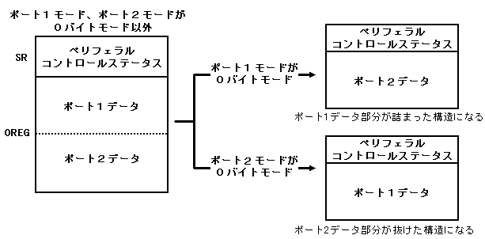

★HARDWARE Manual
★SMPCユーザーズマニュアル
★HARDWARE Manual
★SMPCユーザーズマニュアル
┌───────────┐ ┌─────┬─────┬─────┬─────┬─────┬─────┬─────┐ ＳＲ │ ペリフェラル │ ＝ │ １ │ ＰＤＬ │ＲＥＳＢ │Ｐ２ＭＤ１│Ｐ２ＭＤ０│Ｐ１ＭＤ１│Ｐ１ＭＤ０│ │コントロールステータス│ └─────┴─────┴─────┴─────┴─────┴─────┴─────┘ ├───────────┤───┌──────────┐ ┌────────┬────────┐ │ │ │ポート１ステータス │ ＝ │マルチタップＩＤ│ コネクタ数 │ │ │ ├──────────┤ └────────┴────────┘ │ ポート１データ │ │ペリフェラル１データ│ │ │ ├──────────┤───┌──────────────┐ ┌─────────┬─────────┐ │ │ │ペリフェラル２データ│ │サターンペリフェラルＩＤ │＝│セガサターン │ データサイズ │ ＯＲＥＧ├─ ─ ─ ─ ─ ─┤─┐ ├──────────┤─┐ ├──────────────┤ │ペリフェラルタイプ│ │ │ │ │ │ ： │ │ │拡張データサイズ │ └─────────┴─────────┘ │ │ │ ├──────────┤ │ ├──────────────┤ │ ポート２データ │ │ │ ： │ │ │ペリフェラル２ １ｓｔデータ│ │ │ │ ├──────────┤ │ ├──────────────┤ │ │ │ │ ： │ │ │ペリフェラル２ ２ｎｄデータ│ └───────────┘ │ ├──────────┤ │ ├──────────────┤ │ │ ： │ │ │ ： │ │ ├──────────┤ │ ├──────────────┤ │ │ペリフェラルｍデータ│ │ │ ： │ └─└──────────┘ │ ├──────────────┤ │ │ ： │ │ ├──────────────┤ │ │ペリフェラル２ ｎｔｈデータ│ └─└──────────────┘
図3.11 一方が0バイトモード時のリザルトパラメータ構成

| コマンドパラメータ設定条件 | リザルトパラメータ構成 | |||||
|---|---|---|---|---|---|---|
SMPCステータ |
ペリフェラル |
ポート１コン |
ポート２コン |
SMPCステータス |
ポート１データ |
ポート２データ |
| ＜×＞ | ＜×＞ | ＜×＞ | ＜×＞ | ＜×＞ | ＜×＞ | ＜×＞ |
| ＜×＞ | ＜×＞ | ＜×＞ | ＜○＞ | ＜×＞ | ＜×＞ | ＜×＞ |
| ＜×＞ | ＜×＞ | ＜○＞ | ＜×＞ | ＜×＞ | ＜×＞ | ＜×＞ |
| ＜×＞ | ＜×＞ | ＜○＞ | ＜○＞ | ＜×＞ | ＜×＞ | ＜×＞ |
| ＜×＞ | ＜○＞ | ＜×＞ | ＜×＞ | ＜×＞ | ＜×＞ | ＜×＞ |
| × | ○ | × | ○ | × | × | ○ |
| × | ○ | ○ | × | × | ○ | × |
| × | ○ | ○ | ○ | × | ○ | ○ |
| ○ | × | × | × | ○ | × | × |
| ○ | × | × | ○ | ○ | × | × |
| ○ | × | ○ | × | ○ | × | × |
| ○ | × | ○ | ○ | ○ | × | × |
| ○ | ○ | × | × | ○ | × | × |
| ○ | ○ | × | ○ | ○ | × | ○ |
| ○ | ○ | ○ | × | ○ | ○ | × |
| ○ | ○ | ○ | ○ | ○ | ○ | ○ |
★HARDWARE Manual
★SMPCユーザーズマニュアル